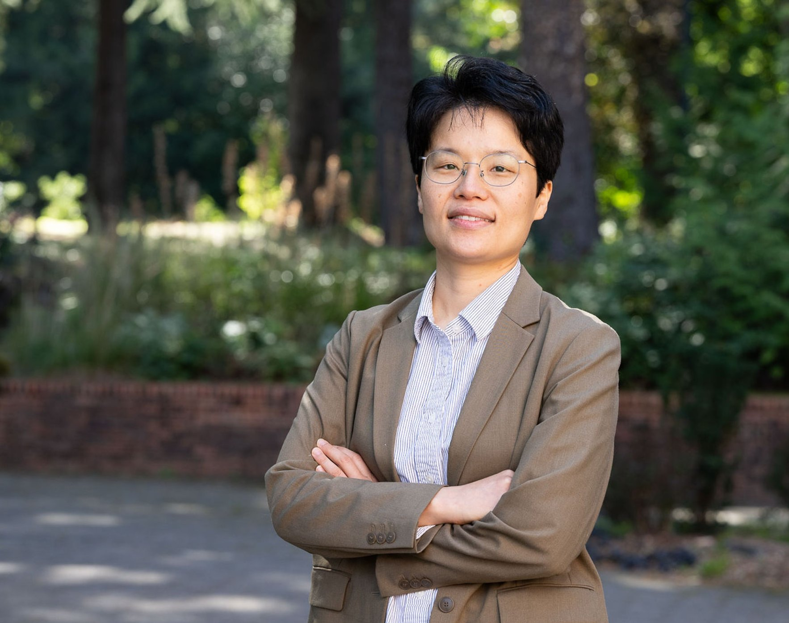

POLICY
Gender Discrimination vs. Workplace Sexual Harassment
Comparative research on distinct legal frames used to advocate for female athletes’ rights in sex-testing debates.
SOCIOLOGIST · EDUCATOR · ACTIVIST
Ph.D. in Sociology
I study how sex classification and gender norms are constructed, contested, and transformed across borders through sport, institutions, and grassroots activism.
Visiting Professor · Lewis & Clark College · Google Scholar ↗

I am a sociologist whose work explores the politics of sex classification, gender, and social change, with a focus on South Korea and transnational sport.
My research examines how sex and gender classifications are globalized and travel across borders, becoming introduced, contested, and institutionalized in local contexts. Drawing on qualitative and quantitative research, I explore LGBTQ+ sports activism and the ways grassroots communities reimagine sex categories and justice in sport.
I am currently a Visiting Professor in Sociology & Anthropology and Korean Studies at Lewis & Clark College. I earned my Ph.D. in Sociology and a Graduate Certificate in Women, Gender, and Sexuality Studies from the University of Oregon in 2026.
Download full CVGender, sport, governance, and the possibilities of collective action.
Global Gender Policing and LGBTQ+ Sports Activism in South Korea
My dissertation examines sex segregation in sport as a contested political and institutional arrangement. It brings questions of global gender policing into conversation with LGBTQ+ sports activism in South Korea.
Comparative research on distinct legal frames used to advocate for female athletes’ rights in sex-testing debates.
Comparative ethnographic research on LGBTQ+ sports activism in South Korea and Hong Kong.
Geopolitics and moral surveillance in transnational digital discourse.
Peer-reviewed research on gender, sex classification, and globalization.
Melody Huslage and Jinsun Yang · Journal of Women and Gender in Higher Education
Read article ↗Jinsun Yang · Women's Studies International Forum, 111, 103078
Read article ↗Jinsun Yang · Transgender Studies Quarterly, 10(2), 116–132
Read article ↗Selected awards recognizing research, scholarship, and teaching.
Gender, Sexual Behavior, Politics, and Communities Division · Society for the Study of Social Problems
Teaching Social Problems Division · Society for the Study of Social Problems
University of Oregon
I approach teaching as a collaborative process of asking questions, developing research skills, and making sociological knowledge meaningful beyond the classroom.
My courses emphasize transparent expectations, active learning, and research projects that connect theory to students’ experiences and communities.
Previously taught courses at the University of Oregon include Feminist Theory, Gender and Space, Sports and Social Issues, Bodies and Power, and Introduction to Women's, Gender, and Sexuality Studies.
My curriculum vitae includes education, academic appointments, publications, teaching, service, and selected presentations.
View or download CV (PDF)Updated October 2026. PDF opens in a new tab.
INTERVIEW · SEXGENLAB
An interview with SexGenLab, discussing gender and sport.
SEXGENLAB · SEXCAVATION EP. 7Gendered Sports with Jinsun YangWatch interview on YouTube ↗Watch on YouTube ↗I welcome conversations about research, teaching, collaboration, and shared interests in gender, sport, and social change.
jinsun@lclark.edu